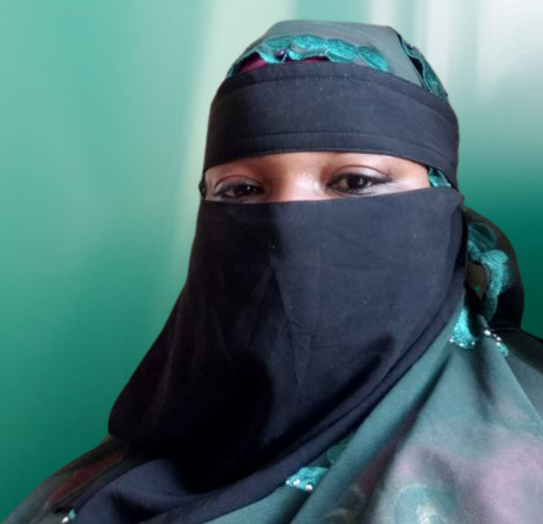

Adjaratou Amadou DIALLO
Titre recherche
Developpeuse Full stack j'ai un an d'experience chez Tech
Mon rôle est d'accompagner les entreprises dans la création
des applications web et mobile
Developpeuse Full stack j'ai un an d'experience chez Tech
Mon rôle est d'accompagner les entreprises dans la création
des applications web et mobile